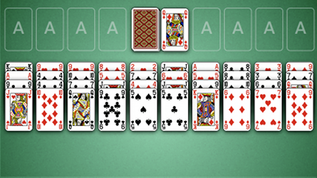
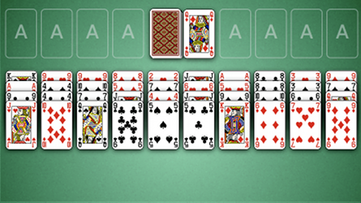
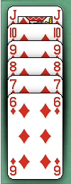

How to Play Forty Thieves
Game Setup
Stock: The stock is the pile of face down cards in the center top of the board. When the player
clicks on the stock, 1 card is dealt face up to the waste.
Waste: The waste is the pile of cards face up immediatly to the right of the stock. Initially the waste is empty, but cards will be dealt from the stock into the waste as the game progresses. Only the top most card in the waste is playable.
Foundations: The foundations are the 8 areas along the top of the table to the right and left of the stock and waste. Initially the foundations are empty, but as the game progresses the foundaions will be built up by suit.
Tableau: The tableau are the 10 piles of cards stacked along the bottom of the table. The tableau begin with 4 cards face up. The tableaus may be built down by suit.

Waste: The waste is the pile of cards face up immediatly to the right of the stock. Initially the waste is empty, but cards will be dealt from the stock into the waste as the game progresses. Only the top most card in the waste is playable.
Foundations: The foundations are the 8 areas along the top of the table to the right and left of the stock and waste. Initially the foundations are empty, but as the game progresses the foundaions will be built up by suit.
Tableau: The tableau are the 10 piles of cards stacked along the bottom of the table. The tableau begin with 4 cards face up. The tableaus may be built down by suit.

Rules

Forty Thieves is played with two decks of cards. The goal of the game is to place all 104 cards into the
foundations. The foundations are built up by suit, meaning that a foundation contains cards of the same suit
piled up from Ace on the bottom to King on top.
The tablueas are used to organize piles of cards until it becomes possible to place them into the foundations. Piles can be built down the tableau by suit as illustrated. Only one card may be moved at a time and any card may be placed into an open tableau. The games ends when the stock is empty and no more moves are possible.
The tablueas are used to organize piles of cards until it becomes possible to place them into the foundations. Piles can be built down the tableau by suit as illustrated. Only one card may be moved at a time and any card may be placed into an open tableau. The games ends when the stock is empty and no more moves are possible.